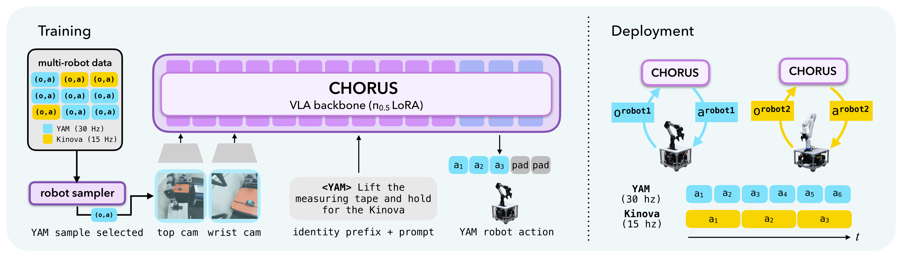
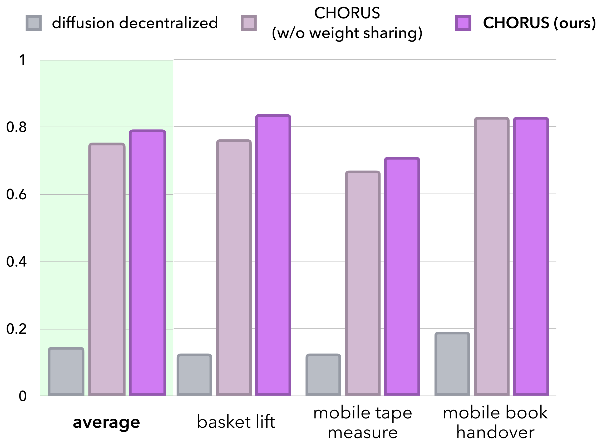
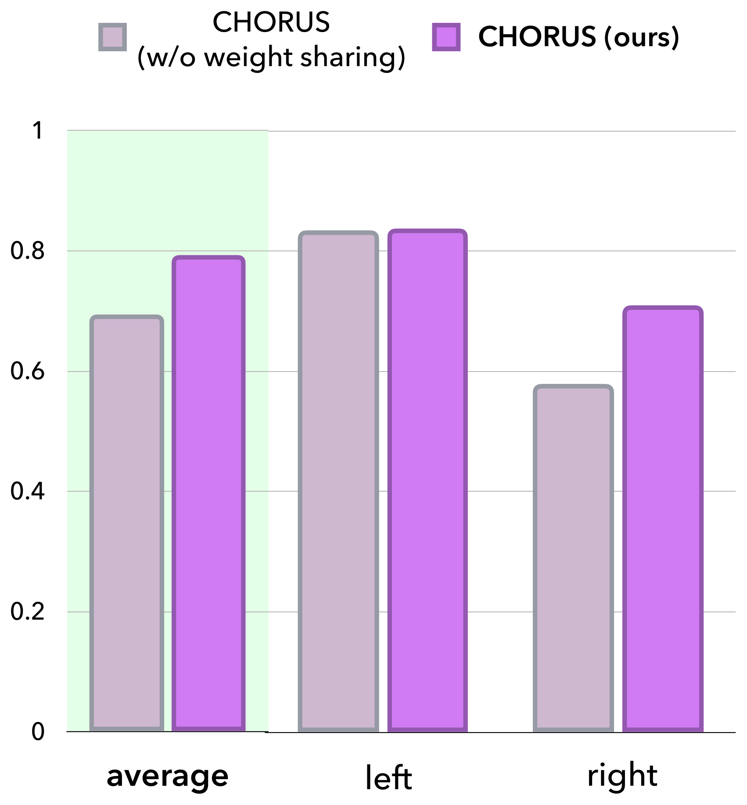
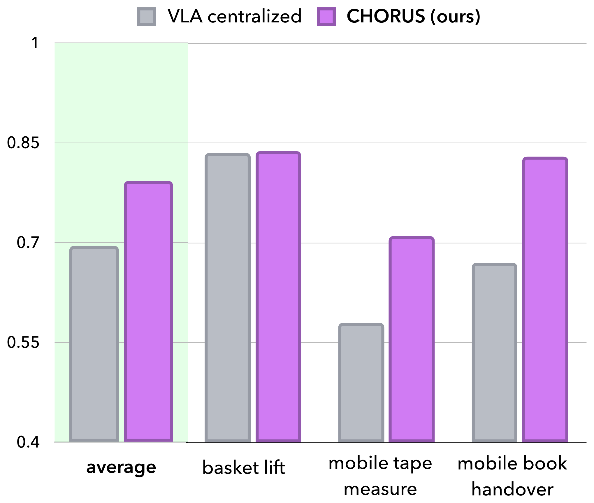
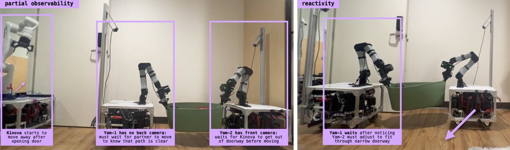

Multi-robot collaboration lets robots efficiently take on a wide range of tasks, from moving a couch through a doorway to assembling structures on a construction site. Achieving such coordination in mobile multi-robot settings, however, remains challenging: centralized methods conditioned on the combined observations of a team scale poorly with team size, and decentralized methods that train one policy per robot often require explicit alignment procedures or information sharing at inference time to overcome partial observability.
Our key insight is that the visuomotor priors of pretrained vision-language-action (VLA) models should enable reactive, decentralized collaboration from each robot's local observations alone, without these inference-time assumptions. We propose CHORUS, a framework that adapts a single VLA backbone to control diverse, multi-robot teams. At inference time, each robot runs an independent copy of CHORUS, conditioned only on its own observations and a robot-identifying prompt. In real-world experiments including mobile tape measurement, library book handovers, and laundry basket lifting, CHORUS achieves a 64% point improvement over decentralized, from-scratch models, improves reactivity to teammate behavior by 40% points, and outperforms centralized baselines. Together, these results show that a shared VLA backbone is capable of achieving decentralized multi-robot collaboration, without per-robot policies or inter-robot communication at inference.

CHORUS fine-tunes a single VLA backbone on multi-robot data and deploys an independent copy on each robot.
CHORUS casts decentralized multi-robot control as fine-tuning a single pretrained VLA backbone (π0.5) on multi-robot demonstrations. A robot sampler draws single-robot tuples (observation, action, and identity prompt) from the multi-robot dataset, and the shared policy is conditioned on a robot-identifying prompt prepended at every timestep. It predicts a padded, 32-dimensional action, so one set of weights can drive embodiments with different action spaces and control rates.
At deployment, the shared weights run independently on each robot, conditioned only on that robot's own cameras and identity prompt, yielding fully decentralized execution. No cameras, proprioceptive states, or communication channels are shared among robots, making CHORUS more deployable than centralized alternatives and cheaper to train than per-robot decentralized policies. Because each robot acts on its own observations, CHORUS also supports asynchronous execution and keeps the context window constant as the team grows.
We evaluate CHORUS on a suite of real-world multi-embodiment collaboration tasks spanning mobile manipulators (Kinova, ARX, and YAM): laundry basket lifting, mobile tape measuring, library book handover, and a three-robot move. Each robot receives a single identity prompt for the entire task, and no information is exchanged between robots at runtime; coordination must emerge through each robot's visual perception of its teammates.
A two-robot team grasps opposite handles of a laundry basket and lifts it together. Each robot must wait for its teammate to secure its handle before the joint lift, coordinating entirely from local views.
Full basket
Empty basket
One robot grabs the tape measure and holds an anchor point while the mobile teammate extends the tape to measure a distance, a tightly coupled interaction across two embodiments at different control rates.
Tape measure
With distractors
One robot grabs a book and hands it to a mobile teammate, which receives the book and retreats, requiring precise spatial coordination at the moment of exchange.
The same recipe scales to a three-robot team of Kinova and YAM mobile manipulators that collaboratively transports a basket, with no architectural change to the policy.
Top view
Side view

Both VLA-based methods significantly outperform decentralized diffusion policies trained from scratch, with CHORUS leading by 64 percentage points in mean success rate. From-scratch diffusion policies exhibit a characteristic mismatch pattern, in which one robot proceeds with its half of the interaction before the other has caught up, for example grabbing one handle and beginning to move before the teammate has grasped the other, causing the basket to slip.
Diffusion: teammate mismatch
Diffusion: failed tape measure

Training one shared policy on both robots' perspectives of every interaction induces a representation that implicitly models the teammate, whereas per-robot policies have no representational incentive to do so. Under teammate perturbations, CHORUS recovers 40% more often than a backbone fine-tuned per-robot, reacting to teammate behavior nearly 2× more effectively.
No weight sharing: misses
No weight sharing: runaway
CHORUS: reactive re-grasp

A centralized policy conditions on the entire team's observations and, in principle, should be an upper bound on collaborative performance. Yet despite conditioning on strictly less information, CHORUS outperforms the centralized VLA in mean success rate. Because CHORUS conditions on only one robot's observations at a time, its inputs more closely reflect the backbone's pretraining distribution, allowing it to better retain its visuomotor priors; the centralized setup instead breaks the semantic correspondence learned during pretraining and is sensitive to any asynchronization between teammates.

We train a single CHORUS policy for a three-robot team of Kinova and YAM mobile manipulators, achieving 90% task success with no architectural change. Because the context window and parameter count stay constant in team size, the same recipe extends gracefully to larger and more heterogeneous teams.
@inproceedings{chorus2026,
title={CHORUS: Decentralized Multi-Embodiment Collaboration with One VLA Policy},
author={Anonymous},
booktitle={Submitted to the 10th Conference on Robot Learning (CoRL)},
year={2026},
note={Under review}
}